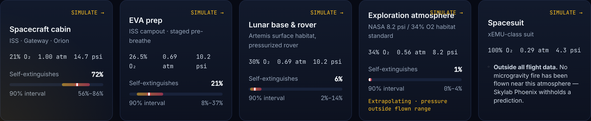
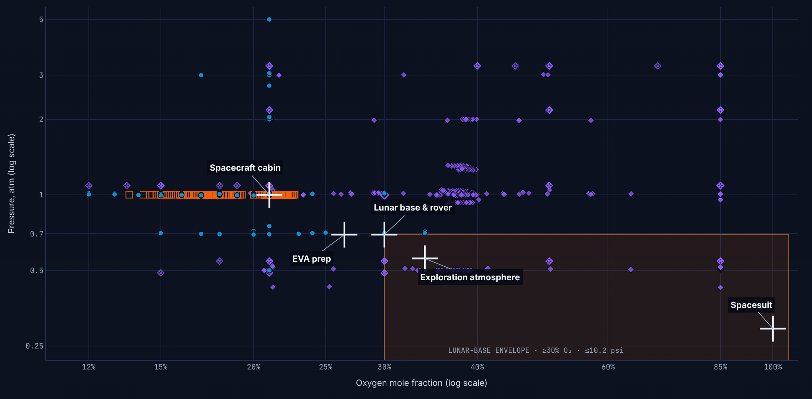
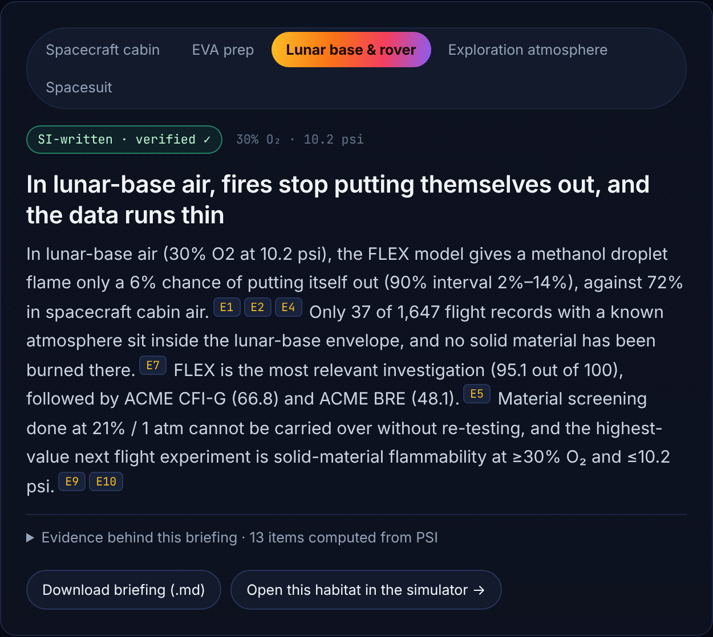
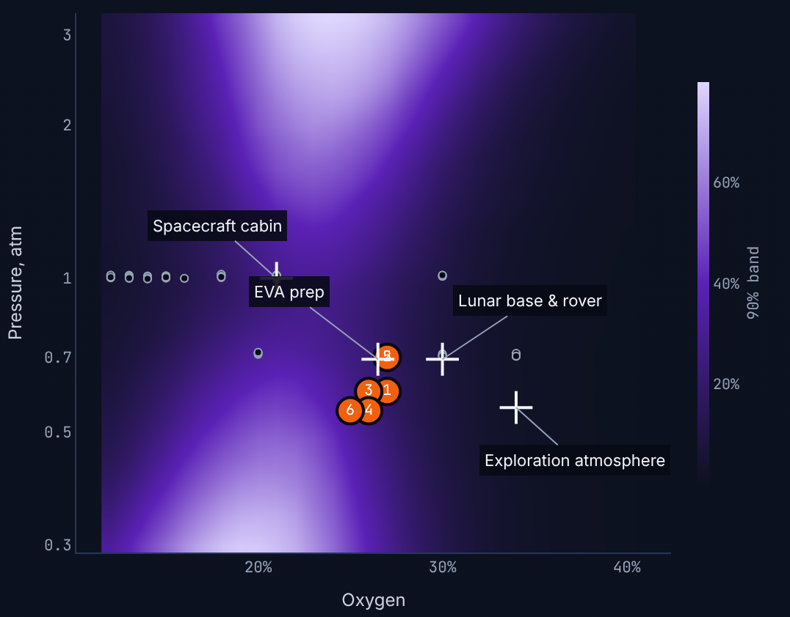

Skylab Phoenix is an SI-powered dashboard that turns NASA's microgravity combustion archive into fire-safety evidence for crewed habitats, with honest uncertainty and every number checked.
Chance that a methanol droplet flame self-extinguishes, cabin air vs 30% O₂ at 10.2 psi (90% interval 2–14%). At 8.2 psi the model says extrapolating; for the spacesuit it refuses to answer.

Logistic model on 261 ISS fires · AUC 0.88 and Brier 0.125 on held-out test days · beats gradient boosting (0.84) and an oxygen-only baseline (0.80).
Only 37 of 1,647 flight records with a known atmosphere sit near lunar-base air, and no solid material has ever burned there: every solid test stayed at or below 22.7% O₂ and cabin pressure.
Material screening done at 21% O₂ and 1 atm cannot be carried over to the Moon base without re-testing.

Fail one check and the dashboard shows the raw evidence instead. Plus: guided views for 5 audiences and “Ask the archive”, a search that quotes NASA's own text.

Where the 200 bootstrap models disagree most near lunar-base air: CO₂ suppression of a methanol droplet at 27% O₂ and 0.60 atm, today's 90% interval 10–51%. And the biggest gap of all: solid materials at ≥30% O₂ and ≤10.2 psi.
Impact: engineers get the closest evidence for their atmosphere with its uncertainty; researchers get a clean, reproducible dataset; students get a guided path. One command rebuilds it all from NASA's public API.
Research aid, not flight certification. Code MIT, data CC0. AI use disclosed in docs/AI_USE.md.
